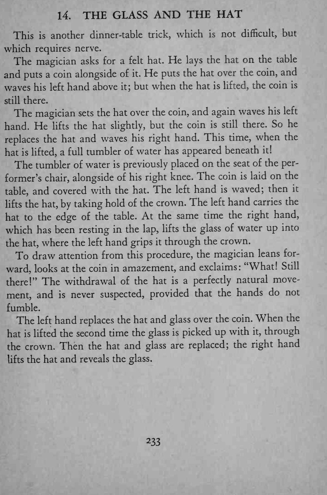
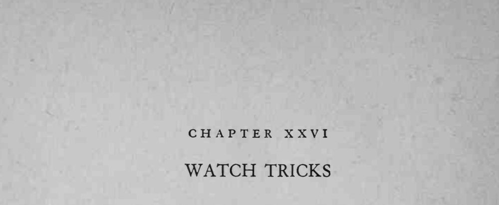

硬币放在桌上，用帽子盖住反复挥动左手都不见效；换右手一挥，帽子下面竟出现一杯水。
提帽、移杯、前倾惊讶要一气呵成，双手不能有翻找或迟疑的动作。


This is another dinner-table trick, which is not difficult, but which requires nerve. The magician asks for a felt hat. He lays the hat on the table and puts a coin alongside of it. He puts the hat over the coin, and waves his left hand above it; but when the hat is lifted, the coin is still there. The magician sets the hat over the coin, and again waves his left hand. He lifts the hat slightly, but the coin is still there. So he replaces the hat and waves his right hand. This time, when the hat is lifted, a full tumbler of water has appeared beneath it! The tumbler of water is previously placed on the seat of the performer's chair, alongside of his right knee. The coin is laid on the table, and covered with the hat. The left hand is waved; then it lifts the hat, by taking hold of the crown. The left hand carries the hat to the edge of the table. At the same time the right hand, which has been resting in the lap, lifts the glass of water up into the hat, where the left hand grips it through the crown. To draw attention from this procedure, the magician leans forward, looks at the coin in amazement, and exclaims: "What! Still there!" The withdrawal of the hat is a perfectly natural movement, and is never suspected, provided that the hands do not fumble. The left hand replaces the hat and glass over the coin. When the hat is lifted the second time the glass is picked up with it, through the crown. Then the hat and glass are replaced; the right hand lifts the hat and reveals the glass.